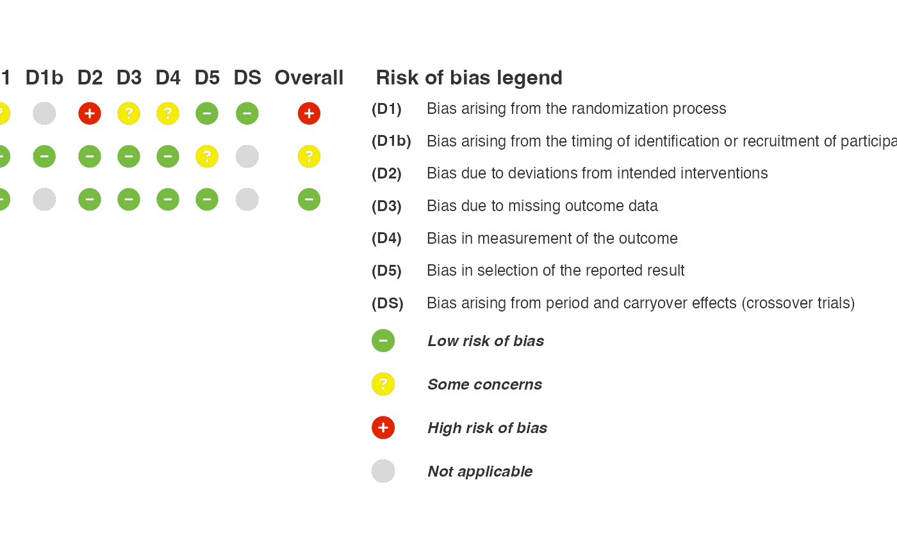

RoB 2 judgements from signalling questions
rob2_algorithm.RdApplies the RoB 2 algorithms to answers to the signalling questions and
returns domain and overall risk of bias judgements, ready for rob_plot()
and rob_summary(). Supports individually randomised parallel-group,
cluster-randomised and crossover trials (RoB 2 cribsheets, 2019 and 2021),
which can be mixed within one meta-analysis.
Usage
rob2_algorithm(
data,
design = "parallel",
effect = c("assignment", "adhering"),
keep_answers = FALSE
)Arguments
- data
A data frame with one row per study and one column per signalling question, named as in the RoB 2 cribsheets:
Domain 1:
1.1-1.3(or1a.1-1a.3).Domain 1b (cluster trials):
1b.1-1b.3.Domain S (crossover trials):
S.1-S.3.Domain 2:
2.1-2.7(cluster trials, effect of assignment:2.1aand2.1bin place of2.1).Domain 3:
3.1-3.4(cluster trials:3.1aand3.1b).Domain 4:
4.1-4.5(cluster trials:4.3aand4.3b).Domain 5:
5.1-5.3(crossover trials: also5.4).
Prefixes and underscores are allowed (e.g.
q1_1,D2.1a). Answers areY,PY,PN,NorNI, abbreviated or in full (e.g. "Probably yes"). Leave questions the algorithm skips empty; a required question left empty is treated as "No information".- design
Trial design:
"parallel"(default),"cluster"or"crossover". Either one value for all studies, or an unquoted column name giving the design of each study.- effect
Effect of interest for domain 2:
"assignment"(the intention-to-treat effect, default) or"adhering"(the per-protocol effect).- keep_answers
Logical. Keep the signalling question columns? (default:
FALSE).
Details
Domain judgements follow the cribsheet algorithms. The overall judgement is
"Low" if all domains are low risk, "High" if any domain is high risk, and
"Some concerns" otherwise. The guidance allows "some concerns" in multiple
domains to be judged high overall; edit Overall if you make that call.
D1b is returned only if there are cluster trials, and DS only if there
are crossover trials. Both are NA for studies of other designs.
Examples
answers <- tibble::tibble(
Author = c("Thermopolis", "Sachs", "Austen"),
Year = c(2001, 2006, 2007),
design = c("parallel", "cluster", "crossover"),
`1.1` = c("Y", "Y", "PY"),
`1.2` = c("Y", "PY", "NI"),
`1.3` = c("N", "N", "N"),
`1b.1` = c(NA, "N", NA),
`1b.2` = c(NA, "PN", NA),
`1b.3` = c(NA, "N", NA),
`S.1` = c(NA, NA, "Y"),
`S.3` = c(NA, NA, "PY"),
`2.1` = c("N", NA, "Y"),
`2.1a` = c(NA, "N", NA),
`2.2` = c("N", "Y", "Y"),
`2.3` = c(NA, "PN", "Y"),
`2.4` = c(NA, NA, "PY"),
`2.5` = c(NA, NA, "N"),
`2.6` = c("Y", "Y", "PN"),
`2.7` = c(NA, NA, "N"),
`3.1` = c("Y", NA, "N"),
`3.1a` = c(NA, "Y", NA),
`3.1b` = c(NA, "PY", NA),
`3.2` = c(NA, NA, "N"),
`3.3` = c(NA, NA, "PY"),
`3.4` = c(NA, NA, "PN"),
`4.1` = c("N", "N", "N"),
`4.2` = c("N", "N", "PN"),
`4.3` = c("N", NA, "Y"),
`4.3a` = c(NA, "PN", NA),
`4.4` = c(NA, NA, "PY"),
`4.5` = c(NA, NA, "PN"),
`5.1` = c("Y", "N", "Y"),
`5.2` = c("N", "N", "N"),
`5.3` = c("N", "N", "PN"),
`5.4` = c(NA, NA, "N"))
judged <- rob2_algorithm(answers, design = design)
judged
#> # A tibble: 3 × 11
#> Author Year design D1 D1b D2 D3 D4 D5 DS Overall
#> <chr> <dbl> <chr> <chr> <chr> <chr> <chr> <chr> <chr> <chr> <chr>
#> 1 Thermopolis 2001 parallel Low NA Low Low Low Low NA Low
#> 2 Sachs 2006 cluster Low Low Low Low Low Some… NA Some c…
#> 3 Austen 2007 crossover Some … NA High Some… Some… Low Low High
rob_plot(judged, add_rob_legend = TRUE)
